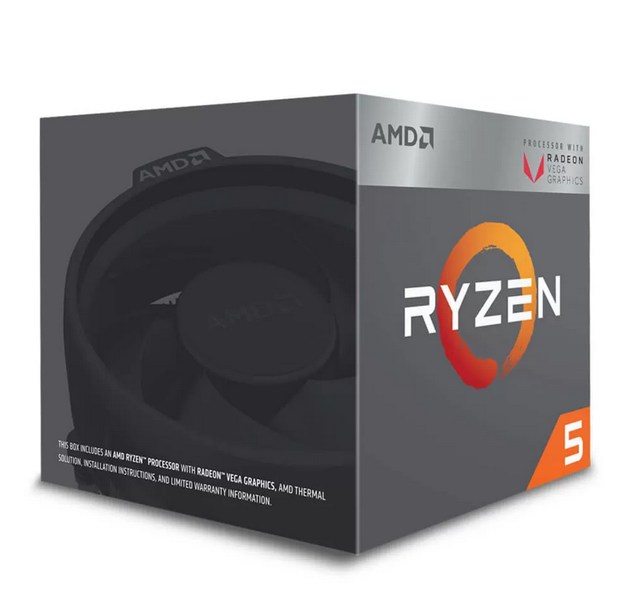
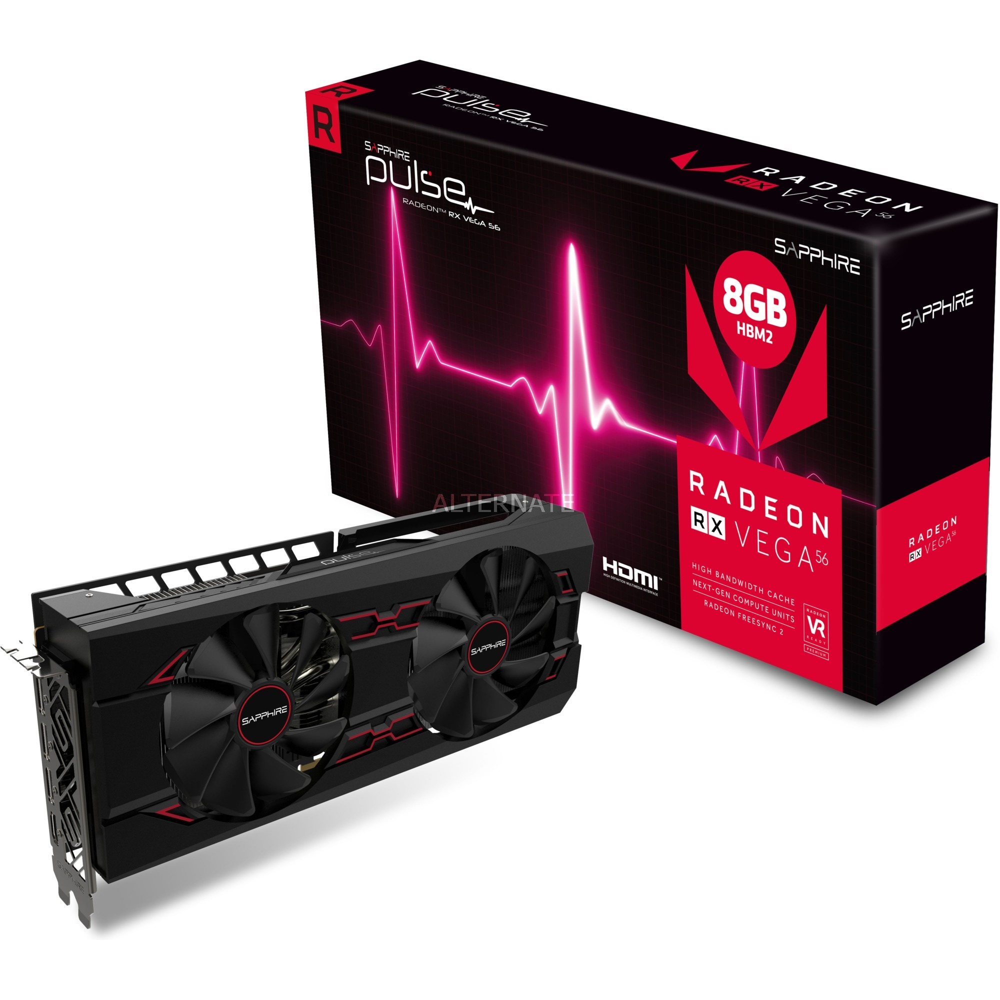
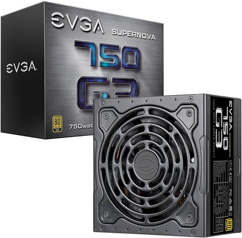
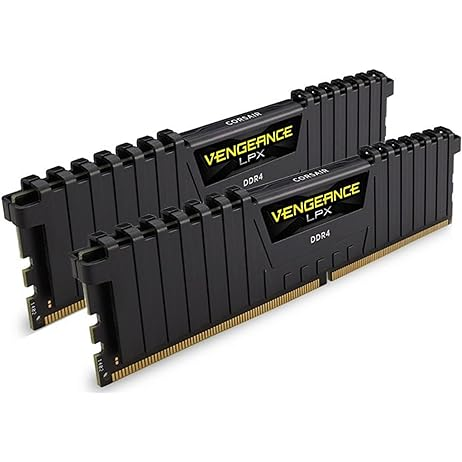
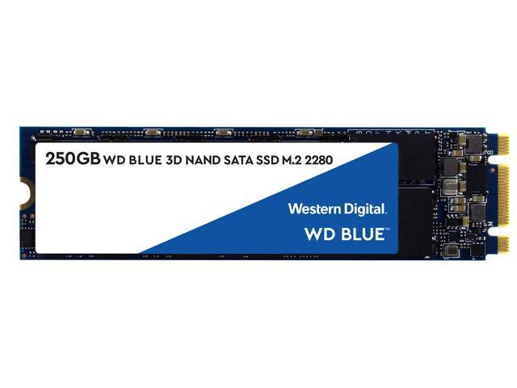
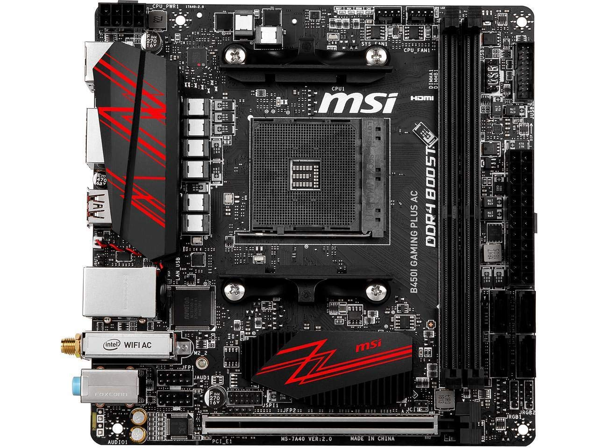
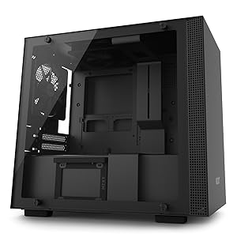
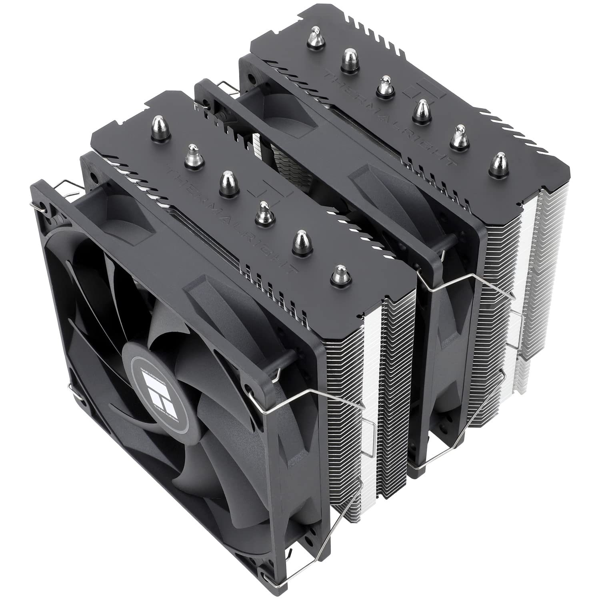
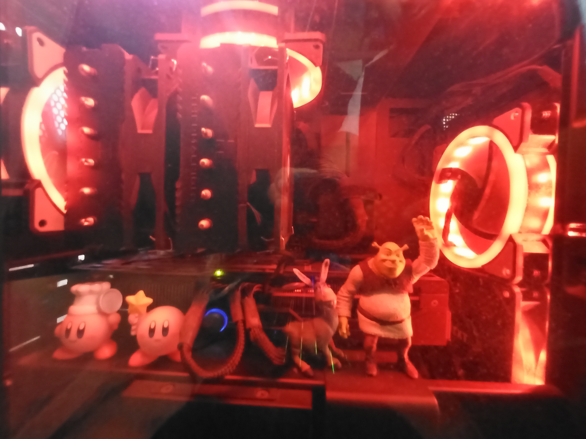

My first foray into building computers started during my first years in college. I was a sophomore by then and was intrigued about gaming on a desktop computer. Curious about the freedom afforded to PC gamers, through game modding, the lack of needing to pay a subscription to play multiplayer games, and having a machine that does it all (play media, do schoolwork, etc.), I felt it was time to transition to using a PC.
At the time, I was a diehard Xbox fan, but felt that the ongoing costs of a service called 'Xbox Live Gold' were slowly becoming a cash sink I was no longer willing to pay for. At least with a built computer, gaming was not its sole purpose, productivity would be supported by a new computer. After saving up while working at a deli/pizzeria/cafe on campus at college, I was ready to jump in.
I had already done some preliminary research surrounding the ins and outs of building a computer. Most of this research was just going on YouTube and looking at guide videos made by the most popular tech YouTubers. Slowly but surely I became familiar with the different hardware necessary to build a computer.
| Part Type | Part Name | Part Visuals |
|---|---|---|
| CPU | AMD Ryzen 5 2400G |  |
| GPU | Sapphire Pulse RX Vega 56, 8GB VRAM |  |
| PSU | EVGA SuperNOVA 750 G3, 80 Plus Gold 750W |  |
| RAM | Corsair Vengeance LPX 16 GB, DDR4 DRAM 3200MHz |  |
| Memory Drive | WD Blue 3D NAND 250GB PC SSD |  |
| Motherboard | MSI B450I Gaming Plus AC |  |
| Case | NZXT H200, Mini-ITX PC Gaming Case |  |
| Cooler | Thermalright Peerless Assassin 120 SE CPU Air Cooler |  |
